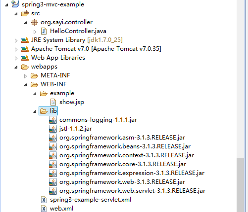
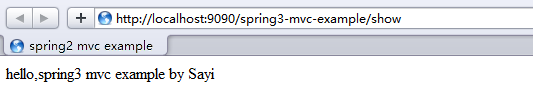

Spring MVC 3 入门示例
要做什么：输入一个url地址，显示页面，页面内容从后台获取。
-
准备：目录结构，依赖架包
首先创建基本的动态web工程的目录，如同下面的结构：---- spring3-mvc-example\ | -- src\ | -- webapps\ | -- META-INF\ | -- WEB-INF\ | -- lib\ | -- web.xml在下载的spring-framword版本的dist目录下，有发布的各种用途的jar包，需要什么架包就使用什么架包。在这个入门级的程序中，我们没有使用到数据库，所以不需要org.springframework.jdbc.RELEASE.jar架包，由于依赖于common-log，所以需要commons-logging.jar。本示例所需架包如下图：
------lib\ | -- commons-logging-1.1.1.jar | -- jstl-1.1.2.jar | -- org.springframework.asm-3.1.3.RELEASE.jar | -- org.springframework.beans-3.1.3.RELEASE.jar | -- org.springframework.context-3.1.3.RELEASE.jar | -- org.springframework.core-3.1.3.RELEASE.jar | -- org.springframework.expression-3.1.3.RELEASE.jar | -- org.springframework.web-3.1.3.RELEASE.jar | -- org.springframework.web.servlet-3.1.3.RELEASE.jar -
web.xml配置：DispatcherServlet
Spring MVC围绕着DispatcherServlet这个核心进行设计的，包括处理请求、URL映射、视图解析、本地化和主题解析等。 如下配置了一个名称为spring3-example的Servlet，其中url-pattern有多种设计方式，请参见 Web 记：如何设计URL ：<servlet> <servlet-name>spring3-example</servlet-name> <servlet-class>org.springframework.web.servlet.DispatcherServlet</servlet-class> <load-on-startup>1</load-on-startup> </servlet> <servlet-mapping> <servlet-name>spring3-example</servlet-name> <url-pattern>/</url-pattern> </servlet-mapping> -
创建Spring bean配置文件
一旦初始化了DispatcherServlet，Spring MVC就会在web应用程序的WEB-INF目录下寻找spring bean的配置文件[servlet-name]-servlet.xml，这里的名称是spring3-example-servlet.xml，那么接下来就是在WEB-INF下创建该文件。<?xml version="1.0" encoding="UTF-8"?> <beans xmlns="http://www.springframework.org/schema/beans" xmlns:xsi="http://www.w3.org/2001/XMLSchema-instance" xmlns:p="http://www.springframework.org/schema/p" xmlns:context="http://www.springframework.org/schema/context" xsi:schemaLocation=" http://www.springframework.org/schema/beans http://www.springframework.org/schema/beans/spring-beans-3.0.xsd http://www.springframework.org/schema/context http://www.springframework.org/schema/context/spring-context-3.0.xsd"> <context:component-scan base-package="org.sayi" /> <bean class="org.springframework.web.servlet.mvc.method.annotation.RequestMappingHandlerMapping" /> <bean class="org.springframework.web.servlet.mvc.method.annotation.RequestMappingHandlerAdapter" /> <bean id="viewResolver" class="org.springframework.web.servlet.view.InternalResourceViewResolver"> <property name="viewClass" value="org.springframework.web.servlet.view.JstlView" /> <property name="prefix" value="/WEB-INF/example/" /> <property name="suffix" value=".jsp" /> </bean> </beans>上面代码中是基于注解的自动扫描配置，这样就会自动扫描@Controller、@Reposity、@Service组件等
<context:component-scan base-package="org.sayi" />配置文件中还提供了三个特别的bean，这些bean在spring中有特别的作用。比如viewResolver配置视图文件存放在WEB-INF/example目录下，RequestMappingHandlerMapping映射请求给处理器，会自动查询@Controller中的@RequestMapping注解，在3.1以前的版本中使用DefaultAnnotationHandlerMapping。默认的配置在包org.springframework.web.servlet下的DispatcherServlet.properties文件中。
-
创建控制器org.sayi.controller.HelloController
使用注解@Controller标识控制器，@RequestMapping标识映射关系，如果方法返回值为void，则默认返回以方法名命名的视图，如下，则会返回show.jsp页面。package org.sayi.controller; import org.springframework.stereotype.Controller; import org.springframework.ui.Model; import org.springframework.web.bind.annotation.RequestMapping; @Controller public class HelloController { @RequestMapping("show") public void show(Model model){ model.addAttribute("msg", "hello,spring3 mvc example by Sayi"); } } -
创建页面 WEB-INF/example/show.jsp
<%@ page language="java" contentType="text/html; charset=UTF-8" pageEncoding="UTF-8"%> <!DOCTYPE html> <html> <head> <meta charset="UTF-8"> <title>spring2 mvc example</title> </head> <body> ${msg} </body> </html> 测试结果
至此，完整的目录结构如下：

访问：http://localhost:port/spring3-mvc-example/show
